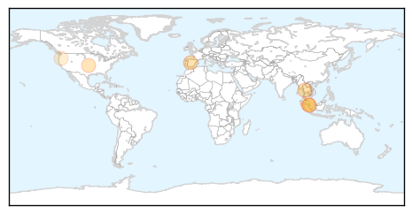
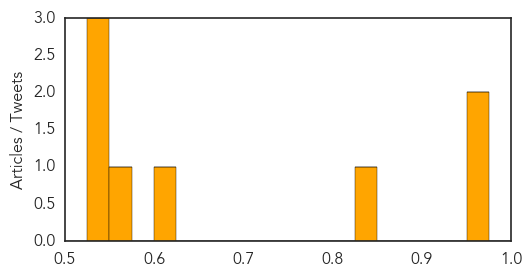

Hepatitis
30-Day Web Trend
4 alerts, 1 warnings

30-Day Twitter Trend
0 alerts, 0 warnings

Article Locations
Article Confidences
Top Articles:
- 0.967
- 2 more patients test positive for hep C, Health News & Top Stories
- 0.962
- Vaccinations aren’t just for kids
- 0.836
- Doctors are failing spreading the HPV vaccine, Research says
- 0.609
- Sdp calls for release of emails regarding hep c outbreak !
- 0.554
- Cuban HB vaccine undergoes trials in eight countries
- 0.547
- Cuban HB vaccine undergoes trials in eight countries
- 0.540
- Typhoid not on Fomema checklist
- 0.532
- Doctors, Not Parents, Are The Biggest Obstacle To The HPV Vaccine
Top Tweets:
-
No tweets found for Oct 23, 2015
Meningitis
30-Day Web Trend
0 alerts, 0 warnings

30-Day Twitter Trend
4 alerts, 0 warnings

Article Locations

Article Confidences
Top Articles:
- 0.779
- Two school districts, 1 case, 1 possible case of viral meningiti
- 0.750
- Crandon Schools Open Amidst Viral Meningitis Cases
- 0.727
- WHO expert panel urges pilot roll-out of first malaria vaccine
- 0.704
- Dachel Media Update: NYT and Karen Weintraub
- 0.693
- WHO expert panel urges pilot roll-out of first malaria vaccine
- 0.690
- WHO expert panel urges pilot roll-out of first malaria vaccine
- 0.677
- WHO expert panel urges pilot roll-out of first malaria vaccine
- 0.669
- WHO expert panel urges pilot roll-out of first malaria vaccine
- 0.643
- Doctors May Be Discouraging HPV Vaccination
- 0.618
- WHO expert panel urges pilot roll-out of first malaria vaccine
- 0.581
- Polish Study Confirms Vaccines Can Cause Large Number of Adverse Effects
Top Tweets:
-
No tweets found for Oct 23, 2015